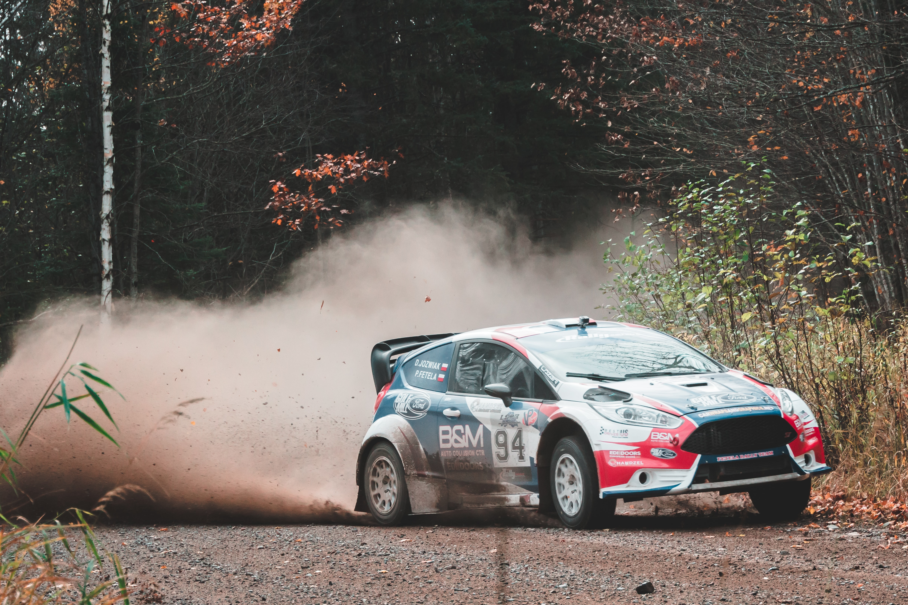
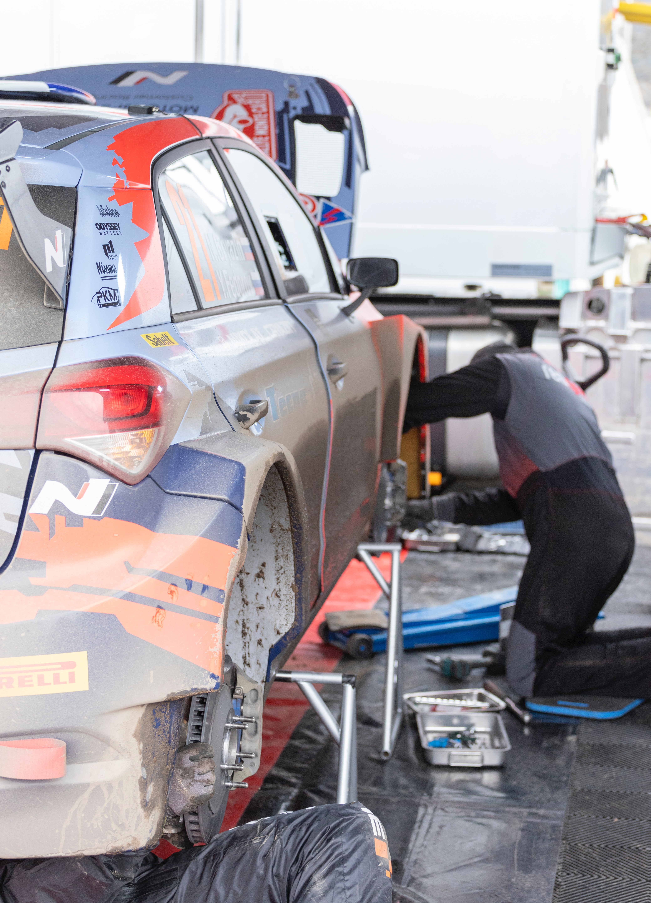
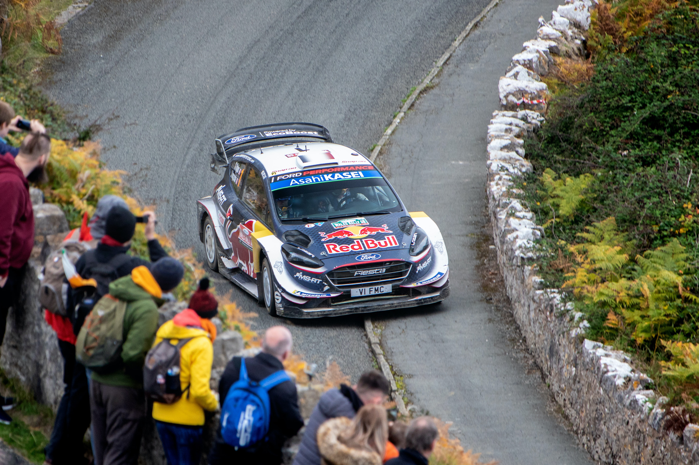

Rally
Wat is rally?
In de autosport is een rally een snelheidsrace op klassementsproeven over daarvoor afgesloten openbare wegen, met auto's die daartoe uitgerust zijn. Ze moeten voorzien zijn van een kooiconstructie, een brandblusser, speciale gordels enzovoort. Daarnaast worden bijna alle rallyauto's geprepareerd om zo snel mogelijk te zijn, zij het binnen bepaalde reglementen.
Bron: Wikipedia
Wedstrijd
Een rally duurt één of meerdere dagen. Wanneer de rally bestaat uit slechts één unieke klassementsproef, wordt de wedstrijd een rallysprint of sprint genoemd.
Rally's bestaan uit meerdere proeven die verspreid liggen rondom de startplaats. De teams rijden vanaf de start naar de eerste proef en tussen de proeven door over openbare wegen, waar de verkeersregels gelden. Op de proeven wordt de eigenlijke wedstrijd verreden. De winnaar is het team met de snelste gecombineerde tijd op de proeven. Daarnaast kan een team straftijden krijgen als het bijvoorbeeld te laat aankomt bij de tijdcontrolepost voor een proef of een andere reglementaire overtreding begaat. De proeven worden meestal verreden in het buitengebied of op militaire of industrieterreinen. De meeste proeven worden verreden tussen twee punten, maar er zijn ook proeven waarbij een bepaalde ronde meermalen afgelegd moet worden; de rondkoersen.
Als een auto tussen de proeven door onderhoud of reparaties nodig heeft, mag dat alleen gerepareerd worden door het team zelf, met in de auto aanwezige onderdelen. Tussen sommige proeven door is een 'service' ingepland waarbij ook de monteurs van het team de auto mogen repareren. Deze reparaties gebeuren in het servicepark.
Ook zijn er al jarenlang regelmatigheidsrally's waarbij een bepaalde gemiddelde snelheid moet worden gereden op RT's, regelmatigheidstrajecten. Soms op klassementsproeven en soms op de openbare weg. Het klassement wordt opgemaakt in strafpunten die men scoort wanneer men afwijkt van het opgelegde gemiddelde.
Bron: Wikipedia
Deelnemers
In een rallyauto zitten twee personen: een coureur en een navigator (samen de rallyequipe). De eerste dicteert tijdens verkenningen, met een straatauto, een gedetailleerde beschrijving van de route, de zogenaamde 'pace-notes', die de navigator voorleest tijdens de wedstrijd. De navigator krijgt ook tussentijden door en weet waar zich op de proef gevaren bevinden. Daarnaast is de navigator ervoor verantwoordelijk dat het team zich op tijd aanmeldt bij de tijdcontroles voor de proeven.
Om de veiligheid te verhogen, is het vandaag de dag voor zowel de coureur als de navigator verplicht een brandvrij pak en een helm te dragen. Ook is het in sommige kampioenschappen verplicht om een HANS-systeem te dragen.
Bron: Wikipedia